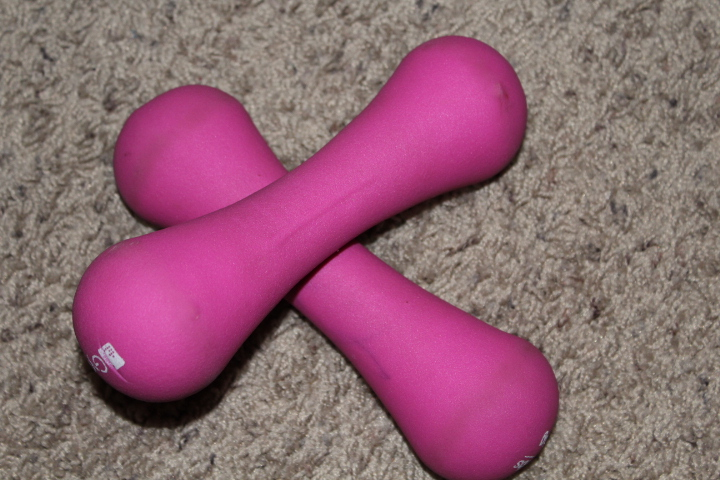

Yes you spelled it right, not heat, HIIT! as in High Intensity Interval Training. By definition, HIIT is a form of training that involves cycles of short bursts on intense training followed by less intense recovery until fatigue/ exhaustion, in other words if you find yourself gasping for air throughout the workout, you are most likely HIITing. I don’t look forward to HIIT day but I love it, here is why.
Since they are so intense, HIIT workouts are designed to be short, typically 30 minutes; convenient to work into a busy day, rain or shine. As you might expect from such intensity, HIIT is known to burn the most calories per minute during the workout, and increases your metabolism for hours afterwards, transforming you a calorie burning machine. Almost sounds too good to be true, right? Yes, there is catch.
The catch is you have to put in the work. Fact is HIIT training is not for the faint of heart, time slows down and it feels like an eternity of pain. HIITing requires work, determination, resilience and all the big words. It’s natural for the body to resist unnecessary stress so you better have good reasons to tell that inner voice that keeps trying to get you to stop. Getting through it is the only catch because afterwards comes the best part, cool down. As the body cools down, endorphins kick in, bringing along relief, sense of accomplishment and confidence to move mountains. That feeling is enough to keep me coming for more.
Traditional HIIT might not be your cup of tea, I present you with Healthy Impossible and Intimidating Tasks, the HIIT I would like all of us to give a try. It can be anything that scares you, running that marathon, launching your side hustle, changing your lifestyle for better, you name it. If it feels impossible, allow yourself just 30 minutes of discomfort, if it feels intimidating, take baby steps. In the words of Martin Luther King Jr.
If you can’t fly, then run, if you can’t run, then walk, if you can’t walk, then crawl, but whatever you do, you have to keep moving.
As you get stronger, it will be a mystery why you were afraid in the first place.
As much it intimidates me, I do HIIT because it reminds me that difficult is not impossible and difficult things are the most rewarding. We could use that reminder every now and then.